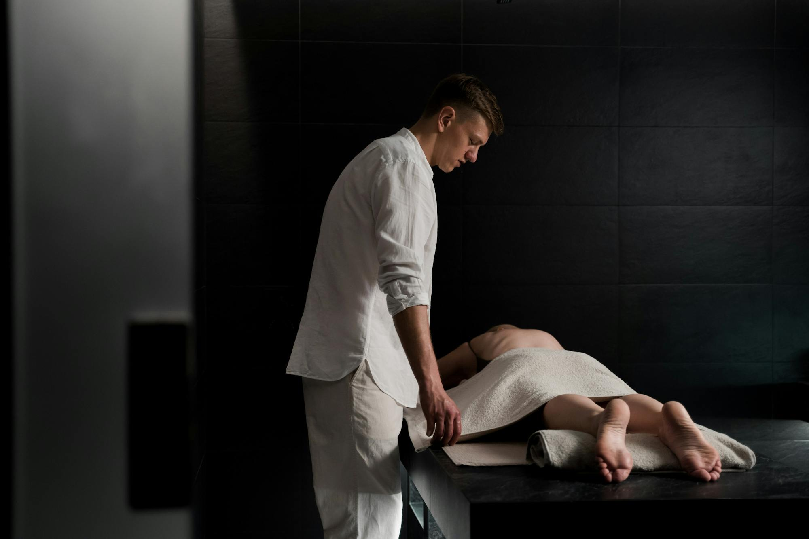
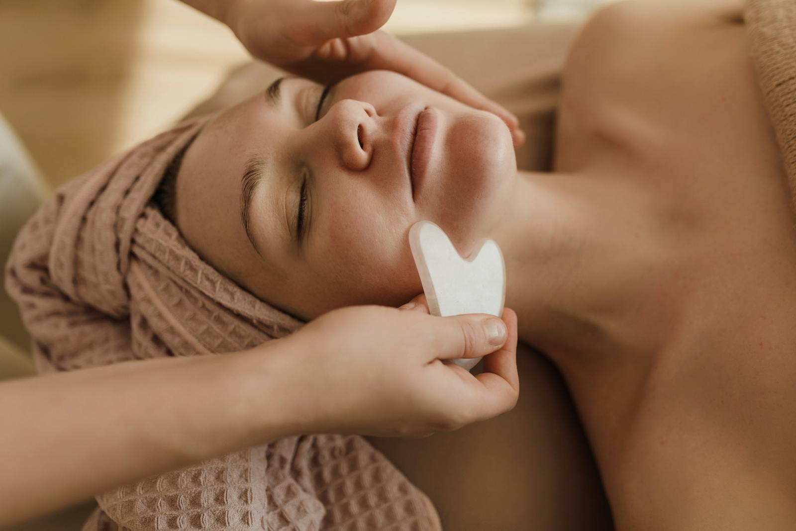
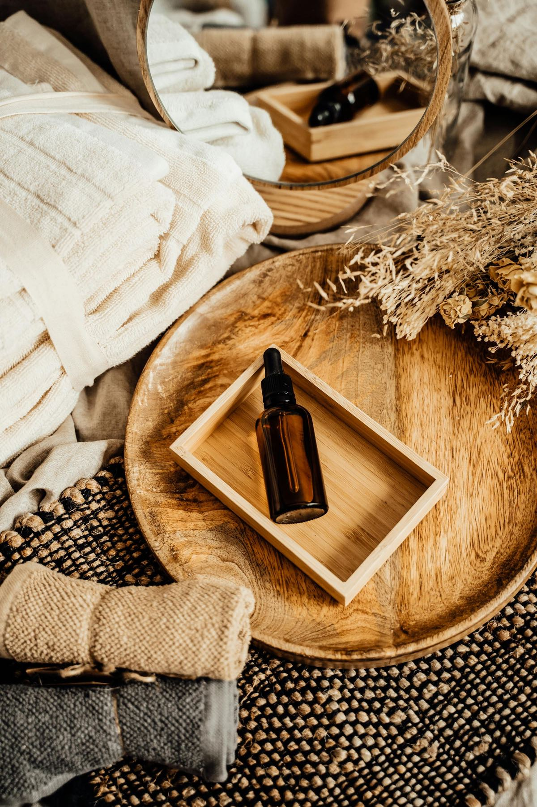
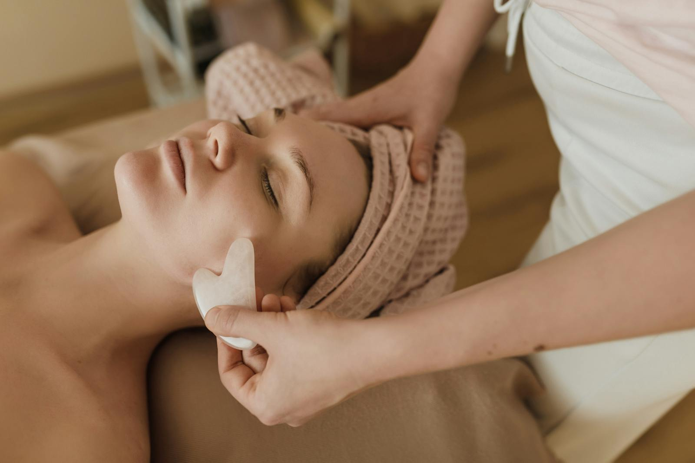
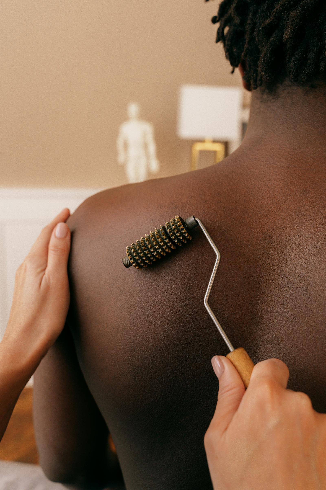
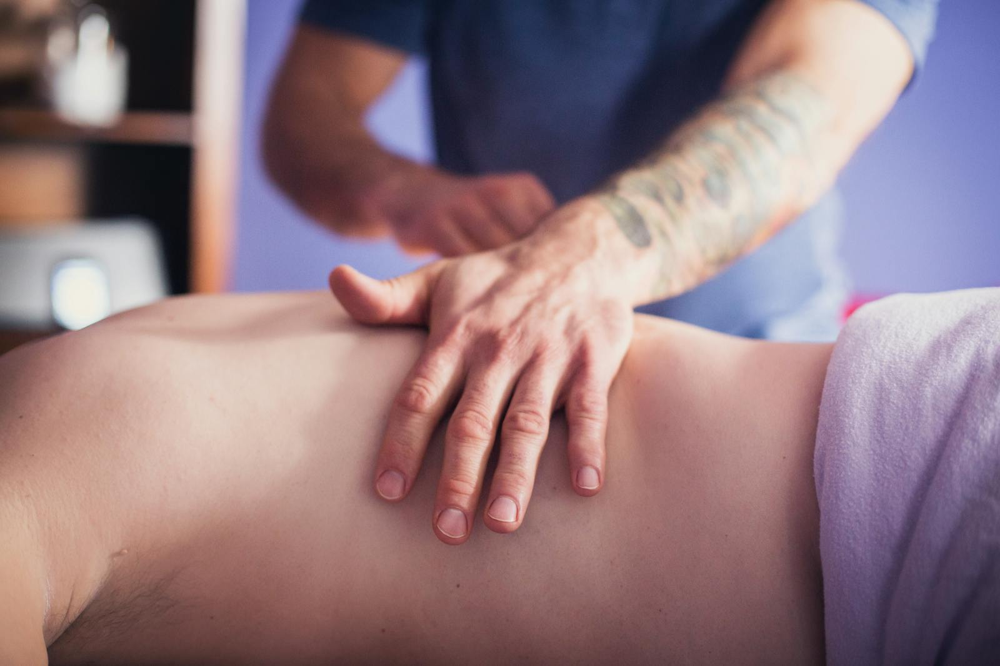
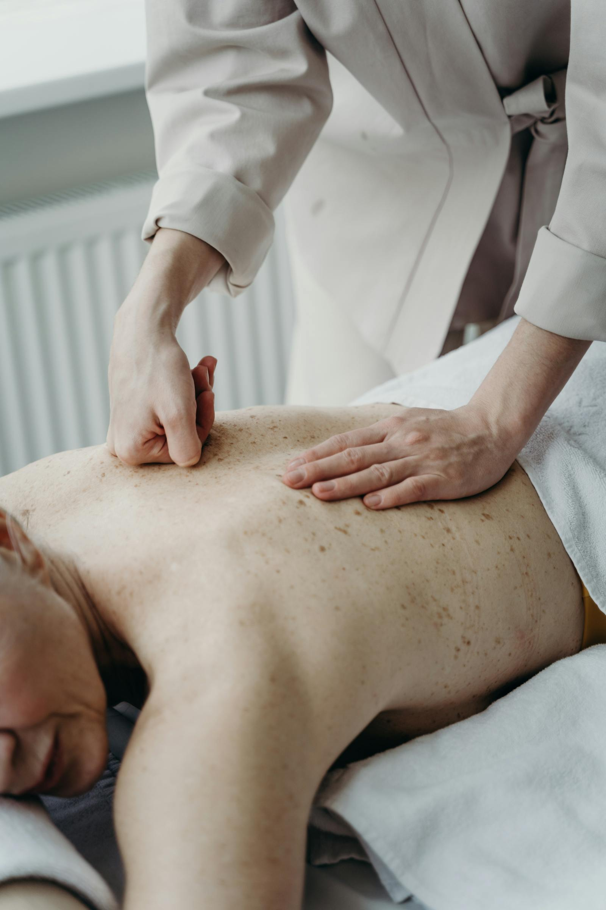
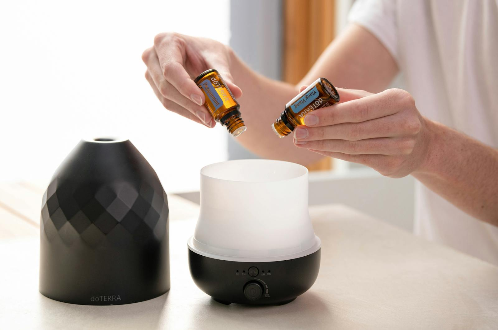
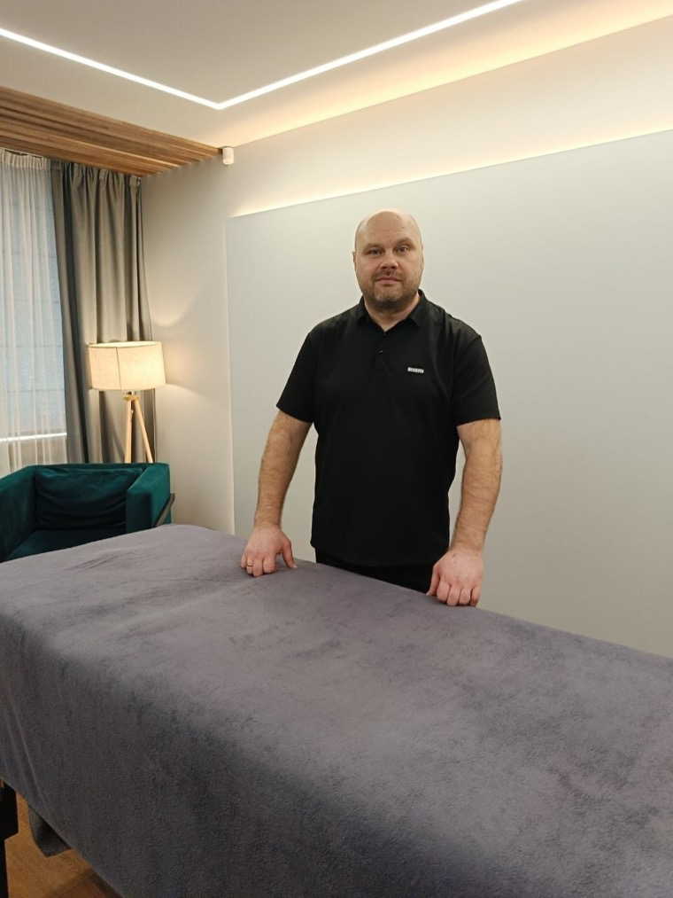

Мышечная диагностика
Помогает определить проблемные зоны, понять источник скованности и подобрать точную работу.
Ваша боль, тревога и стресс исчезнут в наших руках
Авторская методика Станислава соединяет Туйна, Гуаша, Ци-гун, мануальную терапию и глубокую работу с мышцами.

Метод
Сначала мастер внимательно слушает, смотрит тело и определяет зоны напряжения. Затем собирает индивидуальный набор приёмов: от мягкого расслабления до глубокой проработки.
Цель сеанса - вернуть телу подвижность, снизить внутреннее напряжение и дать ощущение лёгкости без спешки и шаблонного подхода.
Помогает определить проблемные зоны, понять источник скованности и подобрать точную работу.
Подходит при напряжении в спине, шее, суставах и позвоночнике. Работа идёт бережно, по состоянию.
Воздействие на мышцы, соединительные ткани и меридианы: тело становится свободнее, стресс тише.
Помогает при отёчности, тяжести и целлюлите, поддерживает выведение лишней жидкости.
Улучшается ощущение кожи и лица, уходит усталость, появляется ясность и прилив сил.
Атмосфера
Больше живых деталей: ручная работа, Гуаша, масла, чистый кабинет и спокойный ритм сеанса.







Сеанс как пауза: тело отпускает напряжение, голова становится тише.
Услуги
Техника адаптируется под состояние, чувствительность и желаемый результат.
Туйна, Туйцы, Гуаша, Ци-гун и работа по энергетическим меридианам.
Для спины, шеи, поясницы, суставов, зажимов и ощущения скованности.
Работа с отёчностью, тяжестью, целлюлитом и восстановлением тонуса тканей.
Массаж головы, ног, спины и всего тела для внутренней тишины и перезагрузки.
Тёплый формат для глубокого расслабления и ощущения обновления.

О мастере
Я профессиональный массажист. Изучал техники разных народов и направлений, а главное внимание уделил восточной школе: Туйна, Ци-гун, Гуаша и Туйцы.
На основе китайских практик, мануальной терапии и современных подходов к восстановлению я собрал свою технику более широкого действия. Мой принцип - найти корень проблемы и подобрать ключ именно к вашему состоянию.
Более 7 лет практики, тысячи часов сеансов, внимательное отношение к связи тела, настроения и внутреннего напряжения.
Боль в спине, шее, пояснице, тяжесть после работы, последствия нагрузок, тревога и стресс, которые осели в теле.
FAQ
Сначала беседа и осмотр, затем индивидуальный план работы и сам сеанс: от расслабляющих до более глубоких приёмов.
Туйна, Туйцы, Гуаша, Ци-гун, мануальная терапия, миофасциальная, лимфодренажная и классическая работа.
Лёгкость, ясность, снижение напряжения, спокойствие в теле и прилив сил, которые раньше забирал стресс.
Используются качественные масла, мягкий хлопок, свежие полотенца и простыни после каждого гостя.
Контакты
Подарите себе ощущение лёгкости и ясности, которое должно быть вашим естественным состоянием.
Как добраться